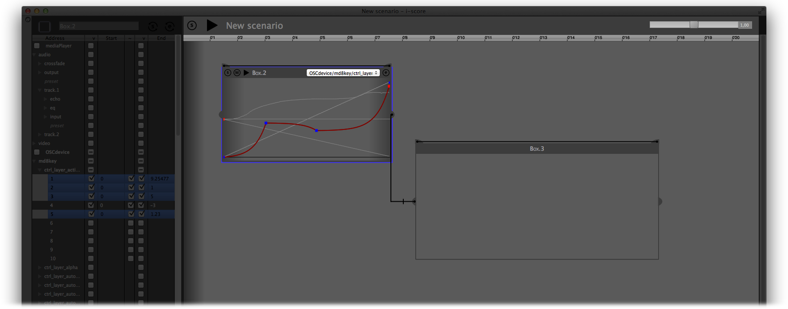
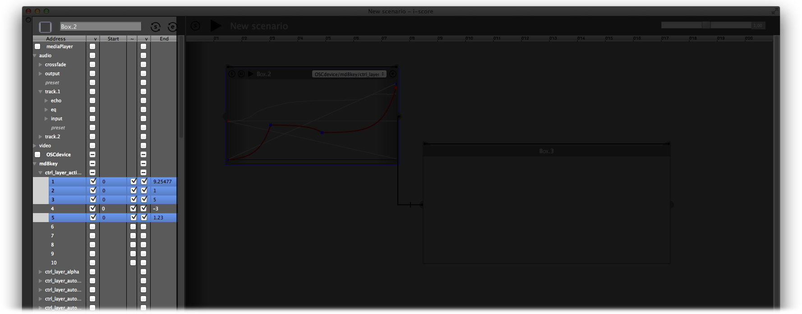
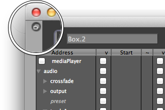
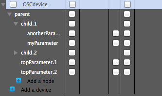
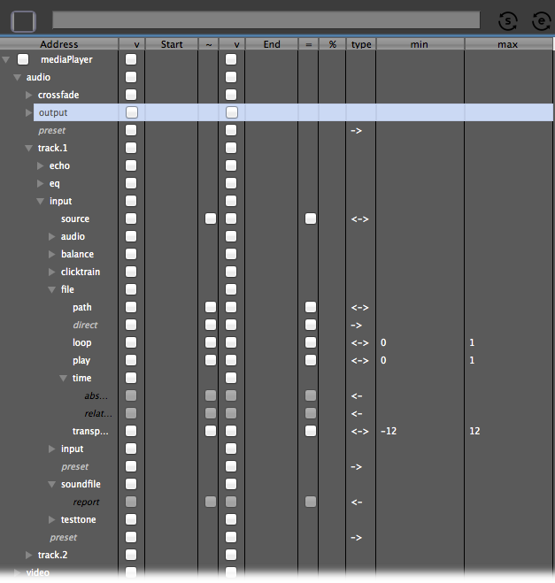

This guide will walk you through the various component of i-score interface.
i-score interface is organized around two main parts: the Device Explorer, used to navigate and manage your distant application’s parameters and the timeline where you create and organize your automations in time.
Timeline
When starting a brand new project, i-score offers a blank score named by default “New Scenario”. The name of the scenario is displayed in the timeline pane top bar. If you save your scenario on disk using Save from the File menu (cmd+s/ctl+s respectively on Mac and Windows), the name in the timeline pane top bar will be updated with the name of your scenario file.

The main area is where you create and organize various objects such as automations boxes along the indicative time rule at the top.
Objects are created by dragging your mouse in the scenario while holding cmd/ctl (respectively on Mac and Window). See Writing automation section for detailed explanations.
Please note that as of version 0.2.2, i-score does not support copy, paste, duplicate, undo facilities. These features and related shortcuts will be available in future versions
This top bar also provides a transport section with the following controls:
play/stop the execution of your scenario
rewind to the start of your scenario
adjust speed of your scenario in real time
Device explorer
The Device explorer allows to navigate through the various parameters of your distant application and select/unselect the parameter whose values to get stored in an object on the timeline.

The Device explorer pane can be hidden/displayed by toggling the Device explorer entry in the View menu (cmd+e/ctl+e respectively on Mac and Windows). It can also be moved in a seperate window by clicking the top-left button in i-score’s main window. To attach it back to i-score main window, slide the Device explorer window to the left or right side of the timeline pane.

Basic components
The Device explorer displays a structured list of all parameters of a distant application loaded as an i-score device (See Using i-score with osc applications and Using i-score with Minuit applications for detailed explanations).
Each node in a parameter address is displayed as a name and a grey arrow. This arrow lets you expand/collapse the various levels or your application parameters. In the illustration below, we can see that the OSCdevice has the following parameters:
/parent/topParameter.1
/parent/topParameter.2
/parent/child.1/myParameter
/parent/child.1/anotherParameter
/parent/child.2/myParameter
/parent/child.2/anotherParameter

Each parameter can be of 3 different types:
- bidirectionnal: a distant application’s parameter can be set and get from i-score
- receiver: a distant application’s parameter can be set from i-score
- sender: a distant application’s parameter can be get form i-score
Note that in the Device explorer pane, receivers and senders are respectively displayed as light grey italic text and black italic text.
The Device explorer pane provides two columns named “Start” and “End”. For each parameter of the device, these columns display start and end values of an automation box. A double-click in the cell brings a textfield allowing to manually set start and/or end value.
{kind=link}
Both Start and End columns are precedeed by a column named “v” containing checkboxes. These allow to set whether a parameter value will be respectively stored as a box’s start or end.
Finally, the column named “~” is use to set whether i-score will draw an interpolation between start and end values of an automation box.
Advanced settings
Some additionnal settings can be accessed by widening the Device explorer pane (when the Device explorer pane is attached to i-score main window, grab its right border and slide it to the right).

The first column named “=” sets whether repeted values will get filtered out (default) when playing an automation.
Column named “%” allows to define the rate at which values will get sent by i-score. Time between two values is given as milliseconds.
“Type” column displays a symbol depending on the type of the parameter: bidirectionnal (<->), receiver (->) or sender (<-).
Finally, “min” and “max” column display some optional minimum and maximum values for the parameter, as optionally defined in the xml file describing the parameters structure of your device (ie. for OSC devices) or as queried by i-score (ie. for Minuit devices).